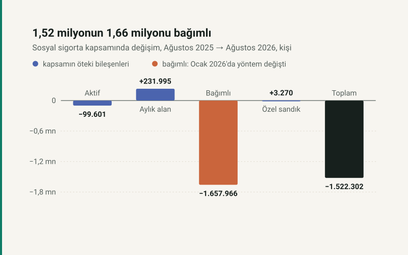

Kısa cevap
Kapsam küçüldü mü? Rakam küçüldü, ama nedeni sayım. Kapsamın dört bileşeninden yalnız bağımlılar azaldı ve onların sayısı yöntem değiştiği için bir önceki yılla doğrudan karşılaştırılamıyor. Çalışan, aylık alan ve özel sandık üyesi toplamı arttı.
Çalışan sigortalı azaldı mı? Toplamda çok az: aktif sigortalı %0,4 azaldı. Ücretli ve memur arttı, esnaf ve çiftçi azaldı.
Aktif/pasif oranı ne diyor? SGK'nın oranı Ağustos 2026'da 1,572. Oranı asıl düşüren 2023'teki emeklilikte yaşa takılanlar (EYT) düzenlemesi. Emeklilik primi ödenmeyen stajyer, kursiyer ve çıraklar çıkarılınca oran 1,489; 2024'ten beri hemen hemen yatay.
Kapsamdaki 1,5 milyon nereden geliyor?
SGK'nın "sosyal sigorta kapsamı" dört grubun toplamı: prim ödeyen aktif sigortalılar, aylık ya da gelir alanlar (pasif), onların bakmakla yükümlü olduğu aile üyeleri (bağımlılar) ve kendi sandığı olan kurum çalışanları (özel sandıklar). Toplamı bileşenlerine ayırınca düşüşün tek kaynağı görünüyor.
| Bileşen | Ağustos 2025 | Ağustos 2026 | Değişim |
|---|---|---|---|
| Aktif sigortalı | 25.813.500 | 25.713.899 | −99.601 |
| Aylık ya da gelir alan (kişi) | 16.936.679 | 17.168.674 | +231.995 |
| Bağımlı | 34.171.744 | 32.513.778 | −1.657.966 |
| Özel sandıklar | 475.300 | 478.570 | +3.270 |
| Toplam | 77.397.223 | 75.874.921 | −1.522.302 |
SGK, Tablo 3'ün dipnotunda bağımlı sayısının Ocak 2026'dan itibaren Sağlık Provizyon Aktivasyon Sistemi'ndeki kayıtlar provizyon üzerinden tekilleştirilerek hesaplandığını ve yöntemin değiştiğini yazıyor. Aynı kişinin birden fazla sigortalının bağımlısı görünmesi gibi tekrarlar ayıklanınca sayının düşmesi beklenir. Bu yüzden 1.657.966'lık fark, nüfusun bir yılda o kadar kapsam dışına çıktığını göstermiyor; iki farklı ölçümün farkı. Tablonun "sigortalı nüfus oranı" da aynı nedenle %90,35'ten %88,13'e indi.
Bir not: Bu tablodan alınan toplam, kalemleri toplayınca tutmuyor gibi görünebilir. SGK'nın toplamı pasifleri kişi olarak (17.168.674) sayar ve özel sandıkları da içerir. Aylık dosyası (16.356.969) ile toplanırsa 1.290.275 kişi eksik kalır; farkın 811.705'i dosya ile kişi arasındaki fark (bir ölüm aylığı dosyasından birden fazla hak sahibi aylık alır), 478.570'i özel sandıklar.
Çalışan sigortalı: kim arttı, kim azaldı?
Statüye göre ayrım SGK'nın Tablo 2'sinde, ay ay ve stajyer, kursiyer ve çıraklar hariç. Aynı ayla karşılaştırma mevsim etkisini ortadan kaldırıyor.
| Statü | Ağustos 2025 | Ağustos 2026 | Değişim | % |
|---|---|---|---|---|
| 4/a (ücretli) | 16.974.140 | 17.269.532 | +295.392 | +1,7 |
| 4/b (esnaf, çiftçi) | 3.408.548 | 2.850.597 | −557.951 | −16,4 |
| 4/c (memur) | 3.641.627 | 3.737.976 | +96.349 | +2,6 |
| Toplam | 24.024.315 | 23.858.105 | −166.210 | −0,7 |
Toplamdaki düşüşün kaynağı 4/b. Ama Ağustos 2025 4/b için olağan bir ay değil: sayı Haziran 2025'te 2.987.509 iken Temmuz'da 3.745.469'a sıçradı, Ağustos'ta 3.408.548, Eylül'de 3.083.993 oldu. SGK tablosu bu geçici yükselişin nedenini yazmıyor. Sıçramadan önceki Haziran 2025'e göre 4/b'deki azalış 136.912, Aralık 2025'e göre 254.545. Yani 4/b gerçekten azalıyor, ama Ağustos'tan Ağustos'a kıyas bunu büyütüyor. 4/b'nin içinde tarımda kendi adına çalışanların sayısı 780.043'ten 534.341'e indi.
Ücretli sigortalı ise Ağustos 2026'da 17.269.532 ile Tablo 2'nin Ağustos aylarındaki en yüksek değerinde. Stajyer, çırak ve isteğe bağlı sigortalılar da eklendiğinde aktif sigortalı toplamı yalnızca 99.601 azaldı.
Aktif/pasif oranı: düşüşü ne getirdi?
SGK aktif sigortalı sayısını aylık ya da gelir alan dosya sayısına böler. Oranın hesabında stajyer, kursiyer ve çıraklar da aktif sayılır; oysa onlar iş kazası ve meslek hastalığı yönünden sigortalı, emeklilik (uzun vadeli sigorta) primleri ödenmiyor ve sayıları okul takvimiyle oynuyor. Aralık 2025'te 1.503.839 olan stajyer ve kursiyer sayısı Ağustos 2026'da 1.005.862. Aralık ile Ağustos'u karşılaştırmak bu yüzden yanıltır.
| Dönem | SGK oranı | Staj ve çıraklık hariç |
|---|---|---|
| Aralık 2015 | 1,922 | 1,859 |
| Aralık 2022 | 2,007 | 1,845 |
| Aralık 2023 | 1,664 | 1,543 |
| Aralık 2025 | 1,625 | 1,495 |
| Ağustos 2025 | 1,600 | 1,519 |
| Ağustos 2026 | 1,572 | 1,489 |
İki şey görünüyor. Birincisi, 2022'deki 2,007 zirvesinin bir kısmı staj: stajyer ve çıraklar çıkarılınca 2022 (1,845) 2015'ten (1,859) farklı değil. İkincisi, asıl kırılma 2023: emeklilikte yaşa takılanlar düzenlemesiyle aylık dosyası bir yılda 2.107.897 arttı (bir önceki yıl artış 281.090'dı) ve oran bir yılda 2,007'den 1,664'e indi. O günden beri staj hariç oran 1,5 civarında; Ağustos 2025'ten Ağustos 2026'ya 1,519'dan 1,489'a indi.
SGK'nın 2026 dengesi
SGK'nın nakit tablosuna göre Ocak–Ağustos 2026'da gelirler giderleri karşılamadı: açık 84,3 milyar TL. Primler giderin %74,0'ını karşıladı. Gelirlere aynı dönemde 503,6 milyar TL devlet katkısı yazıldı; katkı gelir sayılmasa açık 587,9 milyar TL olurdu. 2026 bütçesi bütün yıl için 43,7 milyar TL açık öngörüyordu.
| Ay | Prim geliri | Devlet katkısı | Denge |
|---|---|---|---|
| Ocak | 327,1 | 87,9 | −90,2 |
| Şubat | 368,5 | 121,6 | −3,6 |
| Mart | 516,9 | 0,0 | 41,1 |
| Nisan | 473,1 | 0,0 | −32,5 |
| Mayıs | 398,5 | 28,9 | −10,2 |
| Haziran | 495,6 | 16,1 | 9,6 |
| Temmuz | 481,8 | 125,2 | 16,3 |
| Ağustos | 482,2 | 123,8 | −14,8 |
Ağustos satırında bir ayrıntı var. Primlerin dörtte biri oranındaki devlet katkısını öngören 5510 sayılı Kanunun 81 inci maddesinin üçüncü fıkrası, 7590 sayılı Kanunla 1 Ağustos 2026'da yürürlükten kalktı. Buna rağmen SGK'nın Ağustos tablosunda katkı satırına 123,8 milyar TL yazıldı. Tablo nakit esaslı ve kaldırılan fıkra katkının talep edildikten sonraki 15 gün içinde ödenmesini öngörüyordu; Temmuz'a ait katkının Ağustos'ta ödenmiş olması bu yüzden mümkün. Hangisi olduğu Eylül tablosunda görülecek. Konunun hukuki tarafı devlet katkısı yazısında.
Varsayımlar ve sınırlar
- Bütün kişi sayıları SGK'nın aylık bülteninden, düzeltilmeden alındı. Ağustos 2025 sütunu Ağustos 2025 bülteninden, diğerleri Ağustos 2026 bülteninden. İki bültenin ortak 2024 sütunu karşılaştırıldı: yalnız sigortalı nüfus oranında binde bir fark var (%89,73 ve %89,70).
- Tablo 3'teki yıl sütunları yıl sonu (Aralık) değerleri. Bu yüzden yıllık karşılaştırmalar Ağustos'la Ağustos arasında yapıldı; Aralık değerleri yalnız uzun dönem seyri için kullanıldı.
- "Staj ve çıraklık hariç" oran, aktif sigortalıdan stajyer-kursiyer ve çırak satırları çıkarılarak hesaplandı; payda SGK'nınki gibi aylık dosyası. İsteğe bağlı ve tarım sigortalıları aktif sayılmaya devam etti.
- Bağımlı sayısı Ocak 2026'da yöntem değiştirdi; SGK eski yöntemle 2026 sayısı ya da yeni yöntemle geçmiş yıl sayısı yayımlamadığı için değişimin ne kadarının yöntemden geldiği ayrıştırılamıyor.
- Mali rakamlar nakit hareketlerine dayalı geçici gerçekleşme; Tablo 30'dan milyon TL olarak okunup milyar TL'ye yuvarlandı.
Kaynaklar
- SGK Aylık İstatistik Bülteni: Sigortalı İstatistikleri, Ağustos 2026 ve Ağustos 2025 (Tablo 2, Tablo 3 ve dipnotları); Mali İstatistikler, Ağustos 2026 (Tablo 30). 26 Kasım 2026'da indirildi.
- 7590 sayılı Kanun, m.15 ve m.31 (Resmî Gazete, 31 Temmuz 2026)
- 5510 sayılı Kanun, m.4 (sigortalı statüleri) ve m.81
Rakamlar yazının modülünden (kapsam.js) gelir; modül SGK'nın Excel tablolarından betikle çıkarılmış veri dosyasını okur. Görsel bu modülden çizilir ve yazıdaki her sayı otomatik testle yeniden hesaplanır. Statülerin ne anlama geldiği sigortalılık statüleri sayfasında.
Sık sorulan sorular
Sosyal güvenlik kapsamı gerçekten 1,5 milyon azaldı mı?
SGK'nın tablosunda Ağustos 2025'te 77.397.223, Ağustos 2026'da 75.874.921 kişi var; fark 1.522.302. Ama bağımlı sayısı tek başına 1.657.966 azaldı ve SGK bu sayıyı Ocak 2026'dan beri yeni yöntemle hesaplıyor. Bağımlılar dışında kalan kapsam aynı dönemde 135.664 kişi arttı.
Çalışan sigortalı sayısı düştü mü?
Toplam aktif sigortalı bir yılda 99.601 kişi (%0,4) azaldı. Statüye göre bakınca ücretli (4/a) zorunlu sigortalı 295.392, memur (4/c) 96.349 arttı; esnaf ve çiftçi (4/b) 557.951 azaldı. 4/b'deki düşüşün bir bölümü, Temmuz–Ağustos 2025'teki geçici yükselişten.
Aktif/pasif oranı neden düşüyor?
En büyük kırılma 2023'te: emeklilikte yaşa takılanlar düzenlemesiyle aylık dosyası bir yılda 2.107.897 arttı ve oran 2,007'den 1,664'e indi. Ağustos 2026'da oran 1,572. Emeklilik primi ödenmeyen stajyer, kursiyer ve çıraklar çıkarılınca 1,489.
SGK 2026'da açık mı veriyor?
SGK'nın nakit tablosuna göre Ocak–Ağustos 2026'da 84,3 milyar TL açık var. Aynı dönemde gelirlere 503,6 milyar TL devlet katkısı yazıldı; katkı gelir sayılmasa açık 587,9 milyar TL olurdu.